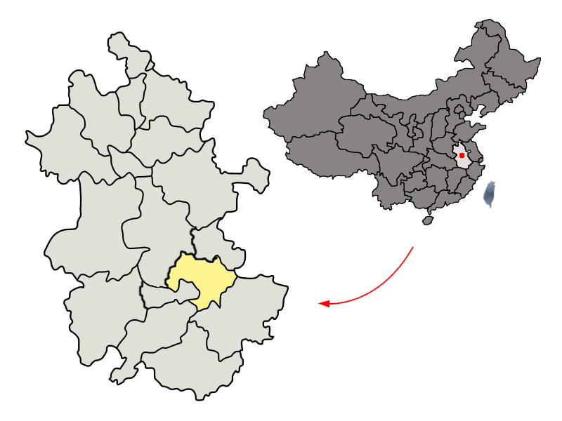
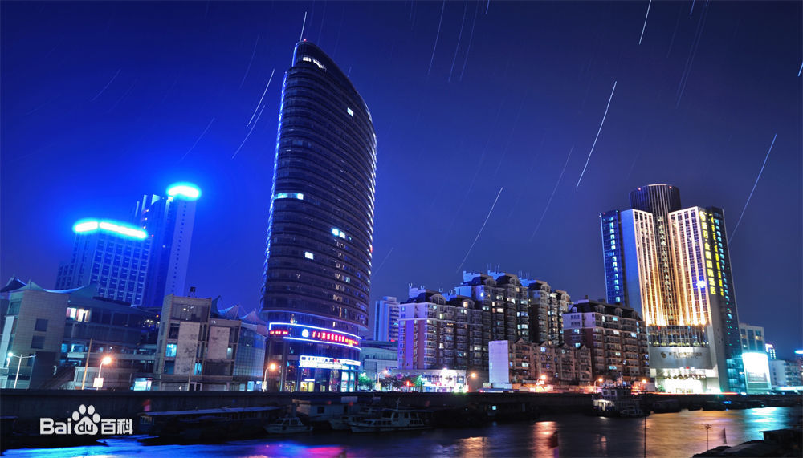

芜湖市位于安徽省东南部，地处长江下游，中心地理坐标为东经118度21分、北纬31度20分，南倚皖南山系，北望江淮平原。北与合肥市、马鞍山市毗邻，南与宣城市、池州市接壤，东与马鞍山市、宣城市相连，西与铜陵市交界。 |
 |
|  |
芜湖地势南高北低，地形呈不规则长条状；地貌类型多样，平原丘陵皆备，河湖水网密布。 芜湖市东部和北部为冲积平原，间有洼地，有少数丘陵，地势低平，西南高东北低。西部和南部多山地。境内有长江、青弋江、裕溪河、花渡河、扁担河、荆山河、黄浒河、倒逆河、漳河、青山河等河流。南塘湖、石板湖、西冲湖、池湖、竹丝湖、龙窝湖等湖泊。 |
芜湖市属亚热带湿润季风气候。芜湖的气候特点是：光照充足，雨量充沛，四季分明。年平均气温15～16℃，日照时数2000小时左右。最热为7～8月，平均气温超过28℃，极端最高气温接近40℃；最冷为1月，月平均气温仅3℃，曾出现过-10℃的极端最低气温。芜湖降雨充沛，年降雨量1200毫米，但年内降水分布不均，主要集中在春季、梅雨季节和初冬。无霜期每年达219～240天 。 |
|
芜湖是一个宜居城市，这里的节奏很慢，这里的人很好，这里的山很绿，这里的水很美，欢迎来到芜湖！ |
|
| Osill Network Technology©2018 联系我们 |
|